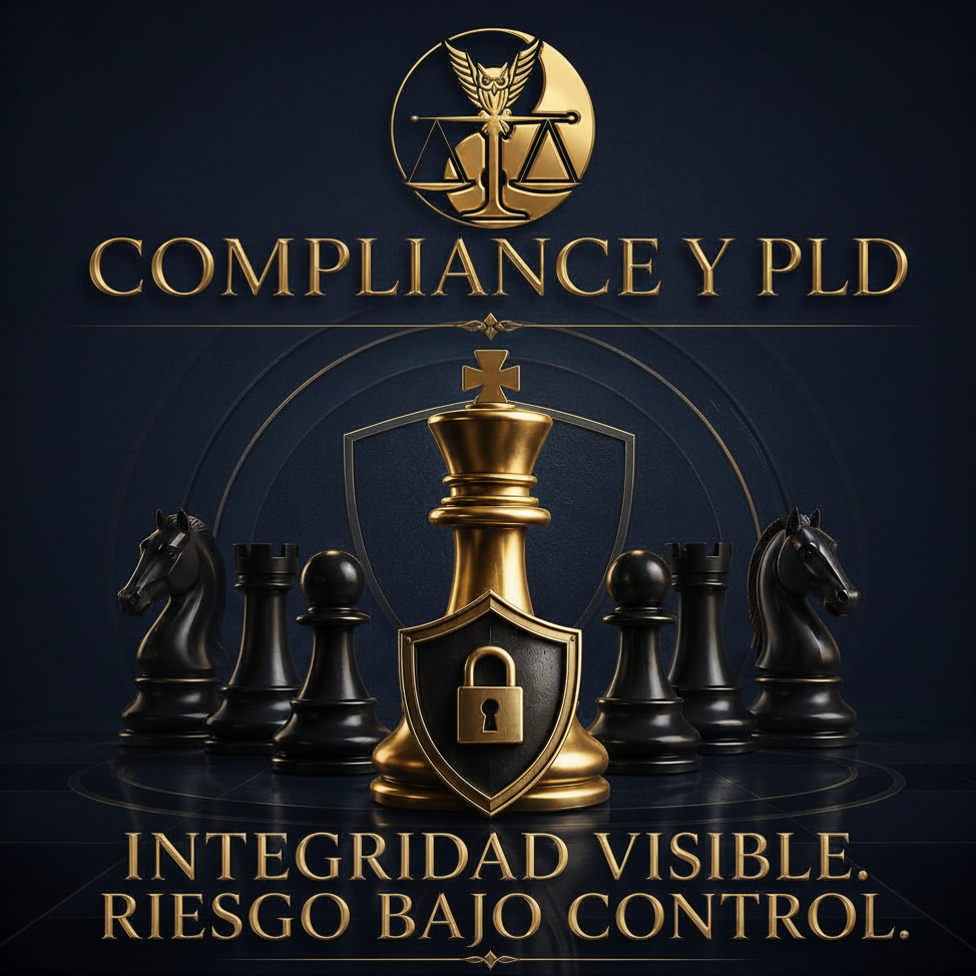

Estrategia Contable y Fiscal
Diseño de estrategias contables y fiscales para empresas mediante planeación fiscal integral mensual y anual para mitigar riesgos tributarios.
Ver servicios
- Diseño de estrategias contables y fiscales para empresas.
- Planeación fiscal anual y mensual.
- Revisión de cumplimiento de obligaciones fiscales.
- Diagnóstico de riesgos contables y tributarios.
- Estructuración de ingresos, costos y deducciones.
- Análisis de régimen fiscal aplicable.
- Implementación de políticas contables internas.
- Conciliación contable-fiscal de operaciones.
- Revisión de CFDI emitidos y recibidos.
- Determinación estratégica de ISR, IVA y retenciones.
- Regularización de declaraciones pendientes.
- Elaboración de papeles de trabajo fiscales.
Consultoría Financiera
Diagnóstico financiero empresarial completo enfocado en optimizar la liquidez, rentabilidad, flujos de efectivo y control de costos.
Ver servicios
- Diagnóstico financiero empresarial.
- Análisis de liquidez, rentabilidad y endeudamiento.
- Elaboración de proyecciones financieras.
- Diseño de escenarios financieros.
- Evaluación de flujo de efectivo.
- Análisis de costos y márgenes de utilidad.
- Planeación de capital de trabajo.
- Reestructuración financiera interna.
- Evaluación de proyectos de inversión.
- Diseño de indicadores financieros.
- Elaboración de dashboards financieros.
- Estrategias para recuperación de cartera y cobranza.
Auditoría y Riesgos
Auditoría financiera e interna preventiva para evaluar el control interno y estructurar matrices de riesgos empresariales operativos.
Ver servicios
- Auditoría financiera.
- Auditoría interna.
- Auditoría fiscal preventiva.
- Auditoría de cumplimiento.
- Evaluación de control interno.
- Identificación de riesgos operativos.
- Matriz de riesgos empresariales.
- Revisión de procesos administrativos.
- Auditoría de ingresos, costos y gastos.
- Revisión de cuentas por cobrar y cuentas por pagar.
- Evaluación de evidencia documental.
- Emisión de informes de hallazgos y recomendaciones.
Asesoría Corporativa
Constitución de sociedades mercantiles, actas de asamblea, reestructuras accionarias y regularización documental y legal de empresas.
Ver servicios
- Constitución de sociedades mercantiles.
- Modificación de estatutos sociales.
- Elaboración de actas de asamblea.
- Cesión de acciones o partes sociales.
- Aumentos y reducciones de capital.
- Reestructura accionaria o societaria.
- Nombramiento y revocación de administradores.
- Otorgamiento y revocación de poderes.
- Revisión de libros corporativos.
- Regularización documental de sociedades.
- Integración de expedientes corporativos.
- Asesoría en gobierno corporativo.
Capacitación Profesional
Programas de formación fiscal, contable y administrativa diseñados a la medida para actualizar a tus equipos internos de trabajo.
Ver servicios
- Capacitación fiscal para empresas.
- Capacitación contable para equipos administrativos.
- Cursos de actualización en ISR, IVA y CFF.
- Talleres de CFDI y facturación electrónica.
- Capacitación en control interno.
- Capacitación en prevención de lavado de dinero.
- Cursos de estados financieros e interpretación.
- Talleres de flujo de efectivo y finanzas empresariales.
- Capacitación en obligaciones patronales.
- Formación en cumplimiento normativo.
- Capacitación en herramientas digitales e IA.
- Diseño de programas internos de formación profesional.
Eficiencia Digital e IA
Automatización de procesos administrativos y uso estratégico de inteligencia artificial para el análisis predictivo financiero.
Ver servicios
- Automatización de procesos administrativos.
- Digitalización de controles contables.
- Implementación de dashboards empresariales.
- Uso de inteligencia artificial para análisis financiero.
- Automatización de reportes fiscales y contables.
- Optimización de bases de datos empresariales.
- Diseño de papeles de trabajo inteligentes.
- Integración de herramientas digitales para gestión documental.
- Automatización de conciliaciones.
- Análisis de información con modelos predictivos.
- Implementación de controles digitales internos.
- Capacitación en uso estratégico de IA para empresas.

Compliance y PLD
Diagnóstico completo, manuales de cumplimiento y control de avisos para la adecuada Prevención de Lavado de Dinero.
Ver servicios
- Diagnóstico de cumplimiento en materia de PLD.
- Identificación de actividades vulnerables.
- Elaboración de manual de cumplimiento PLD.
- Integración de expedientes de identificación de clientes.
- Revisión de operaciones vulnerables.
- Presentación y control de avisos PLD.
- Matriz de riesgo de clientes y operaciones.
- Capacitación en prevención de lavado de dinero.
- Revisión de beneficiario controlador.
- Evaluación de políticas internas de cumplimiento.
- Auditorías preventive en materia de PLD.
- Regularización de obligaciones ante la autoridad.
Fusiones y Adquisiciones
Procesos de Due Diligence financiero, fiscal y contable previo a la compra o venta corporativa para mitigar pasivos ocultos.
Ver servicios
- Diagnóstico previo a procesos de compra o venta de empresas.
- Due diligence financiero.
- Due diligence fiscal.
- Due diligence contable.
- Revisión de pasivos ocultos.
- Valoración financiera de empresas.
- Análisis de estructura accionaria.
- Revisión de contratos y obligaciones relevantes.
- Asesoría en integración posterior a la adquisición.
- Evaluación de riesgos fiscales y corporativos.
- Reestructura previa a una venta o adquisición.
- Preparación de información financiera para inversionistas.
Cumplimiento Normativo
Revisión estratégica de obligaciones fiscales federales, estatales, municipales, corporativas y de seguridad social laboral.
Ver servicios
- Revisión de obligaciones fiscales federales.
- Revisión de obligaciones estatales y municipales.
- Cumplimiento en materia laboral y seguridad social.
- Revisión de obligaciones corporativas.
- Cumplimiento en materia de beneficiario controlador.
- Control de contratos y documentación soporte.
- Diagnóstico de riesgos regulatorios.
- Implementación de políticas internas de cumplimiento.
- Calendario integral de obligaciones empresariales.
- Revisión de expedientes legales and administrativos.
- Seguimiento de requerimientos de autoridades.
- Regularización documental y normativa.
Defensa Fiscal
Atención especializada de requerimientos, aclaraciones, cartas invitación y acompañamiento legal estratégico ante auditorías del SAT.
Ver servicios
- Atención de requerimientos del SAT.
- Revisión de cartas invitación.
- Aclaraciones fiscales ante la autoridad.
- Revisión de diferencias fiscales detectadas.
- Contestación de requerimientos fiscales.
- Acompañamiento en auditorías fiscales.
- Análisis de créditos fiscales.
- Estrategia de regularización fiscal.
- Revisión de multas y sanciones.
- Integración de pruebas documentales.
- Apoyo en recursos administrativos.
- Defensa preventiva ante riesgos fiscales.